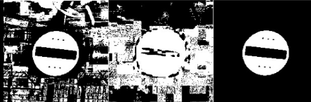

Chi Sono
Sono un dottore magistrale di Ingegneria Informatica presso l’Università di Cassino, appassionato di tecnologia e informatica. Durante il mio percorso accademico, ho acquisito conoscenze in vari ambiti, tra cui programmazione, gestione di progetti e analisi dei dati. Ho avuto l’opportunità di lavorare su diversi progetti di gruppo, dimostrando esperienza nel lavoro di squadra e una forte capacità di problem solving.
Formazione
Laurea Magistrale in Ingegneria Informatica, Intelligenza Artificiale e Robotica
Università di Cassino e del Lazio Meridionale, 2023 - 2025
Laurea Triennale in Ingegneria Informatica e delle Telecomunicazioni
Università di Cassino e del Lazio Meridionale, 2020 - 2023
Progetti

Breast Segmentation MRI 3D
Pipeline per la segmentazione del seno in immagini MRI 3D.
Tecnologie: Deep Learning, Machine Learning
GitHub
Blood Cells Detection and Classification
Pipeline per il riconoscimento di cellule del sangue in diversi stadi di malattia.
Tecnologie: Deep Learning, Machine Learning
GitHub
Turtlebot Control
Programma in C++ con ROS1 per controllare un turtlebot.
Tecnologie: ROS1, C++, Git
GitHub
Traffic Sign Detection
Programma in C++ con OpenCV per rilevare segnali stradali.
Tecnologie: OpenCV, C++
GitHub
2Dynamics
Motore fisico leggero per giochi 2D, con interfaccia facile da usare.
Tecnologie: C++, SDL2
GitHubCompetenze
- Python
- C++
- OpenCV
- ROS1
- Machine Learning
- Deep Learning
- Qt
- SDL2
- Box2D
- Git / GitHub